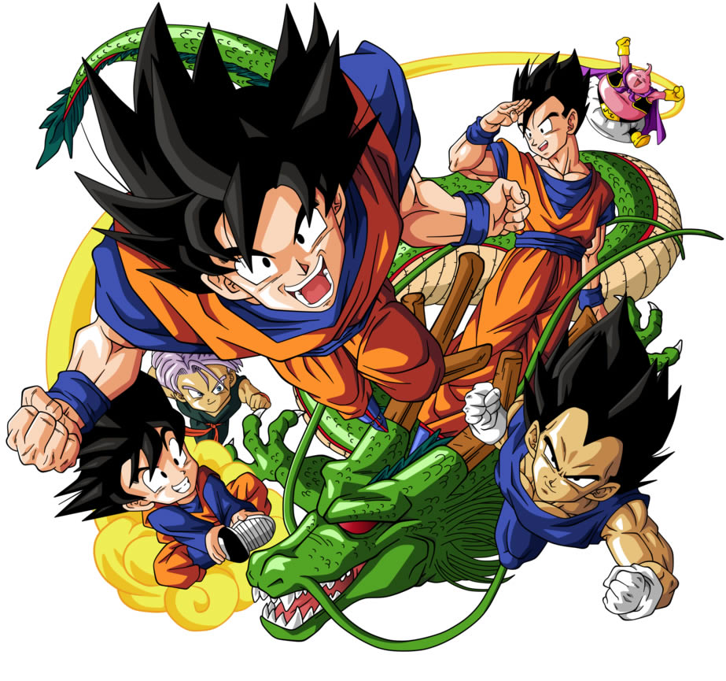

Animes mais famosos de todos os tempos
Dragon Ball
"Dragon Ball" é uma série de anime e mangá criada por Akira Toriyama. A história começa seguindo as aventuras de um jovem garoto chamado Goku, que é encontrado por um idoso chamado Son Gohan e criado como seu neto nas montanhas. Goku possui uma cauda e é revelado mais tarde que ele é um Saiyajin, uma raça alienígena poderosa. A trama se desenrola quando Goku conhece Bulma, uma jovem cientista, e juntos eles partem em uma jornada para reunir as sete Esferas do Dragão, objetos mágicos que, quando reunidos, podem invocar um dragão que concede desejos. Ao longo do caminho, eles encontram uma variedade de personagens, incluindo o mestre de artes marciais Mestre Kame, o guerreiro Yamcha, o poderoso Piccolo e muitos outros. A série original de "Dragon Ball" é mais focada em aventura e comédia, com Goku e seus amigos participando de torneios de artes marciais, lutando contra vilões e explorando o mundo em busca das Esferas do Dragão. A série estabeleceu muitos dos personagens e conceitos que se tornariam centrais em "Dragon Ball Z", incluindo a transformação em Super Saiyajin e as batalhas épicas contra ameaças cada vez maiores. "Dragon Ball" é conhecido por seu humor, ação emocionante e personagens memoráveis, e é considerado um dos mangás e animes mais influentes de todos os tempos.
Naruto
"Naruto" é uma série de anime e mangá escrita e ilustrada por Masashi Kishimoto. A história se passa em um mundo fictício onde ninjas desempenham um papel central nas várias nações. O enredo segue Naruto Uzumaki, um jovem ninja da Vila Oculta da Folha, que aspira a se tornar o Hokage, o líder mais poderoso e respeitado de sua aldeia. Naruto é um órfão que carrega dentro de si a raposa de nove caudas, uma criatura temida e poderosa que foi selada dentro dele quando era apenas um bebê. Devido à presença da raposa, Naruto enfrenta discriminação e solidão na aldeia, mas ele mantém seu sonho de se tornar um grande ninja e ser reconhecido por todos. Ao longo da série, Naruto forma laços com outros ninjas, como Sasuke Uchiha e Sakura Haruno, seus colegas de equipe, e Kakashi Hatake, seu sensei. Juntos, eles enfrentam uma variedade de desafios, incluindo missões de ninja, batalhas contra vilões perigosos e a participação em exames de graduação e torneios. A série explora temas de amizade, perseverança, sacrifício e redenção, enquanto acompanha o crescimento e o desenvolvimento de Naruto e seus amigos à medida que enfrentam adversidades e buscam seus objetivos. "Naruto" é conhecido por suas emocionantes cenas de luta, personagens cativantes e uma história rica e complexa que continua a atrair fãs em todo o mundo.
One Piece

"One Piece" é uma série de mangá e anime japonesa criada por Eiichiro Oda. A história acompanha as aventuras de Monkey D. Luffy, um jovem pirata que sonha em encontrar o lendário tesouro conhecido como "One Piece" e se tornar o Rei dos Piratas. Luffy parte em uma jornada épica pelo vasto mundo, reunindo uma tripulação diversificada e enfrentando perigos inimagináveis, incluindo outros piratas, marinheiros da Marinha Mundial, governantes corruptos e poderosas figuras mundiais. Ao longo de sua jornada, Luffy e sua tripulação enfrentam desafios incríveis, descobrem segredos antigos e forjam laços de amizade que os tornam mais fortes. Com uma mistura única de comédia, ação, drama e emoção, "One Piece" é uma saga emocionante que continua a cativar fãs em todo o mundo.